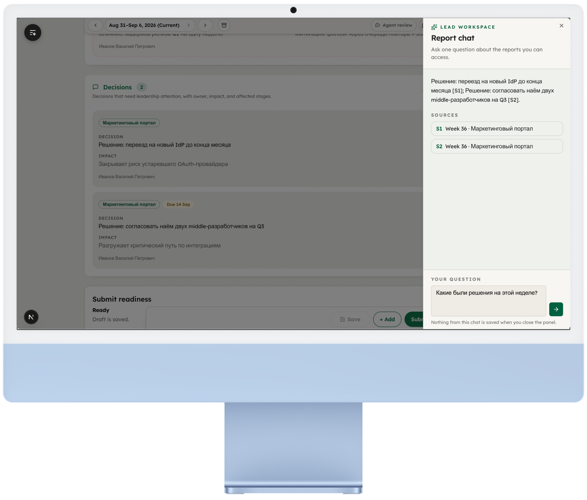

Цифровые технологии и платформы
Стажировка, 2026
Задача: найти нужную информацию среди тысяч корпоративных записей
Внутренняя система компании содержит большое количество информации о проектах, задачах, сотрудниках, рисках, блокирующих факторах и текущем состоянии работ.
Руководителям среднего и высшего звена необходимо быстро получать содержательные ответы на вопросы, которые затрагивают разные проекты, периоды времени и источники информации.
Например: какие риски и блокеры возникали в определенном проекте за последний месяц, как распределена работа конкретного сотрудника или что происходило с несколькими проектами за выбранный период.
Задача состояла в разработке системы, позволяющей получить такую сводку одним запросом на естественном языке.

RAG-система
Спроектировал и реализовал работающий прототип системы, объединяющей языковые модели, инструменты поиска и внутренние корпоративные данные.
Архитектура разделяет планирование поиска и подготовку итогового ответа.
Первая LLM интерпретирует запрос пользователя, определяет необходимую информацию и вызывает соответствующие серверные инструменты.
Для получения данных используются два взаимодополняющих подхода:
- Структурированный поиск с точными ограничениями по датам, проектам, сотрудникам и другим параметрам.
- Семантический поиск на основе embeddings и векторного индекса, позволяющий находить записи, релевантные смыслу запроса, даже при несовпадении формулировок.
Результаты объединяются в ограниченный контекст и передаются второй LLM, которая формирует содержательный отчет с указанием источников.
Архитектура и безопасность
Языковые модели не получают прямого доступа к базе данных и не могут произвольно изменять корпоративную информацию.
Операции поиска выполняются через серверный слой с проверкой прав доступа. В итоговый контекст попадают только разрешенные и релевантные записи.
Система поддерживает модульное подключение разных LLM-провайдеров, в том числе возможность использования моделей, развернутых внутри корпоративной инфраструктуры.
Также реализовано управление версиями промптов и их активацией.
Воспроизводимая оценка качества поиска
Для тестирования поисковых механизмов подготовил набор контрольных запросов, позволяющий воспроизводить одни и те же сценарии и сравнивать результаты.
При тестировании структурированного поиска проверял полноту выборки по заданным условиям, семантического — полноту и релевантность результатов, в том числе при различных формулировках запросов.
Дополнительно проверял работу системы на запросах, не входящих в контрольный набор.
Результат
Разработан работающий прототип AI-системы для получения управленческих отчетов из корпоративных данных. Первым пользовательским интерфейсом стал чат с возможностью задавать вопросы по внутренней информации и получать ответы со ссылками на источники.
К моменту завершения стажировки проект переходил к стадии подготовки опытного внедрения.
Технологии
TypeScript, Next.js, React, NestJS, PostgreSQL, pgvector, Prisma, Redis, BullMQ, tRPC, Zod, Prometheus, OpenAI-compatible API.